主文档
包含 IATF 16949 与 Core Tools 的条款实务映射、审核追问链路、常见断链点和使用说明。
用于培训、内审讲解和项目启动说明。内容把体系要求、核心工具和客户特殊要求之间的关系放在一张业务链上理解。
包含 IATF 16949 与 Core Tools 的条款实务映射、审核追问链路、常见断链点和使用说明。
展示 IATF 16949、CSR、五大工具与量产批准之间的总体结构。
展示从客户要求到 PPAP 再到量产和持续改进的输入输出链路。

